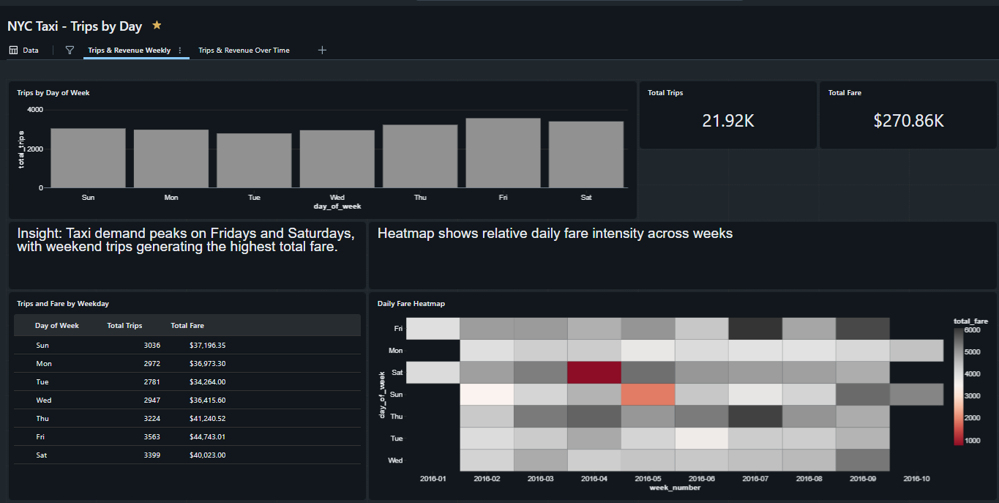

Data Analyst focused on manufacturing and operations analytics.
I support manufacturing, quality, and supply chain execution through accurate data, standardized reporting, and practical process insight. I focus on turning operational data into clear, decision‑ready information while maintaining strong data governance and audit readiness.
All projects referenced below use public, sample, or instructional data only. No proprietary, employer, or internal data is included.

Demonstration analytics dashboard built using publicly available NYC Taxi data. This project explores aggregation, trend analysis, and dashboard visualization in a Databricks environment.
Training dashboard created during a structured Power BI learning session to practice data modeling, visual design, and interactive reporting concepts, including KPI layout and usability considerations.